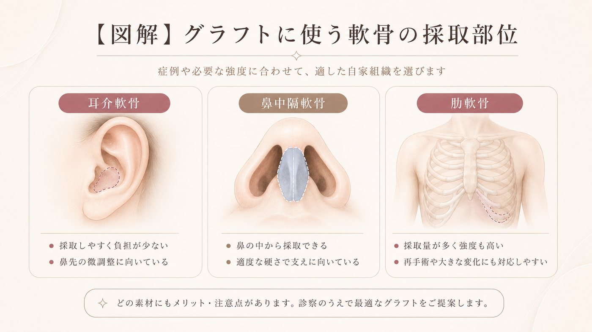
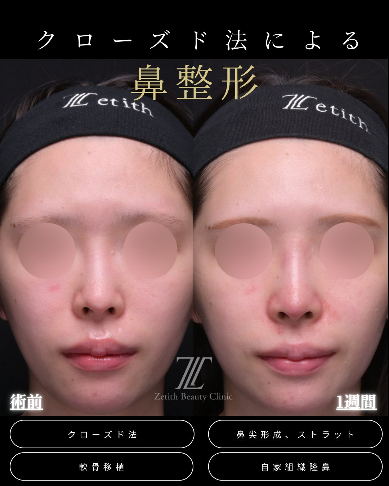
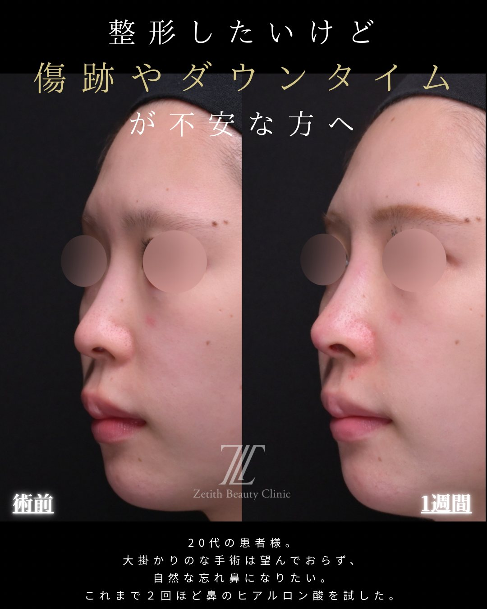
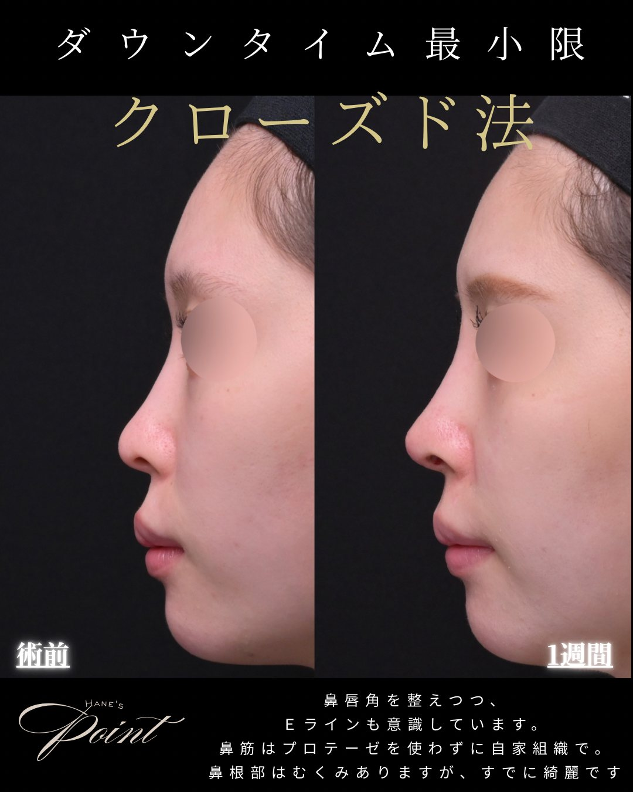

Section 01
隆鼻術とは？（鼻すじを高くする）
隆鼻術（りゅうびじゅつ）は、鼻すじ（鼻背）に素材を入れて高さを出す施術です。鼻が低い・のっぺりして見える・横顔のバランスを整えたい、という方の選択肢になります。
まず押さえるポイント
- 整えるのは「鼻すじ」：眉間の下あたり〜鼻の中ほどの高さを出す施術です
- 鼻先の高さは別：鼻先を前・下に出すのは鼻中隔延長やストラットの役割で、隆鼻術とは目的が違います
- 素材は2択：プロテーゼ（人工素材）か、自家組織（自分の軟骨）から選びます
「鼻を高くしたい」というご希望は、実は鼻すじを高くしたいのか、鼻先を高くしたいのかで必要な術式が変わります。隆鼻術は前者（鼻すじ）を担当します。鼻先まで含めて整えたい場合は、鼻中隔延長やストラットなどと組み合わせて設計します。
Section 02
「プロテーゼ＝派手鼻・バレる」は誤解
「プロテーゼを入れると派手な鼻になる」「いかにも整形したとバレる」というイメージをお持ちの方はとても多いです。ですが、これは誤解です。仕上がりは入れる厚みとデザインで決まります。
誤解①：プロテーゼを入れると鼻先まで高くなる
プロテーゼは鼻筋に入れる素材で、そもそも鼻先を高くできません。鼻先を出したいときは別の術式（鼻中隔延長・ストラット）が必要です。
誤解②：プロテーゼ＝派手・不自然になる
高さを出し過ぎれば不自然になりますが、それはデザインの問題で、素材そのものの問題ではありません。バランスを見て入れれば、自然な範囲で鼻筋を整えられます。
誤解③：プロテーゼは必ずバレる
「バレる」原因の多くは、大きすぎる・輪郭が浮く・皮膚が薄い部位に無理に入れているといったデザインや適応の問題です。適切に選べば、自然に見せることは十分に可能です。
Section 03
プロテーゼと自家組織の違い
鼻すじを高くする素材は、大きくプロテーゼ（人工素材）と自家組織（自分の軟骨：耳介軟骨・肋軟骨）に分かれます。良し悪しではなく、希望する高さ・異物への考え方・皮膚の状態で使い分けます。
| 項目 | プロテーゼ | 自家組織（耳介軟骨・肋軟骨） |
|---|---|---|
| 種類 | 医療用シリコンなどの人工素材 | 自分の軟骨（耳のうしろ・あばら） |
| 向くケース | 鼻すじの高さをしっかり・なめらかに出したい | 異物を入れたくない・自家組織で自然に仕上げたい |
| 追加の傷 | 採取部の傷がない | 耳のうしろ／胸に小さな傷 |
| 主な注意点 | 位置ずれ・輪郭が目立つ・感染・必要時の除去 | 採取部の負担・吸収による変化の可能性 |
| 費用の目安 | ¥242,000〜 | ¥330,000〜 |

Section 04
メッシュに注意（当院では使いません）
鼻すじに入れる素材のひとつにメッシュ（人工の網状素材）があります。手軽に見えますが、当院では使用していません。理由は、素材の性質上いくつかの弱点があるためです。
メッシュの主な弱点（一般的な特性）
- 骨膜下にしっかり収めにくく、皮下に入りやすいため、ずれ・動きが出やすい
- 体に吸収されない（＝入れっぱなしになりやすい）
- 形をなめらかに整えにくく、デザインの自由度が低い
- 結果として、あとから抜去（除去）に至る方が少なくありません
こうした特性から、当院では鼻すじの素材として自家組織を第一に、必要に応じてプロテーゼを用い、メッシュは使いません。すでに他院でメッシュを入れていて気になる場合は、除去（他院修正）にも対応しています。
Section 05
当院の隆鼻術
当院は、皮膚表面に傷を残さないクローズド法で行います。素材は自家組織を第一に検討し、希望する高さや皮膚の状態に応じてプロテーゼも選択します。
鼻先の高さや向きまで整えたい場合は、鼻中隔延長やストラットと組み合わせて全体を設計します。どこまで・どの素材で行うかは、正面と横顔の両方を見ながらカウンセリングで決めていきます。
Section 06
症例（正面・斜め・横）
鼻すじの低さに対して、自家組織（耳介軟骨）で隆鼻を含めて整えた症例です。正面・斜め・横の3方向で掲載します。タブで角度を切り替えられます。
症例｜鼻すじの低さ（クローズド法：鼻尖形成＋軟骨移植＋ストラット＋自家組織隆鼻／耳介軟骨）

images/case-ryubi-front.jpg

images/case-ryubi-oblique.jpg

images/case-ryubi-side.jpg
- 施術内容
- クローズド法：鼻尖形成＋軟骨移植＋ストラット＋自家組織隆鼻（耳介軟骨）
- 料 金
- ¥780,000〜（構成により変動）
- 主なリスク・副作用
- 腫れ・内出血・左右差・感染・仕上がりの個人差 等
- ダウンタイム
- 約1〜2週間（写真は術後1週間）
※ 20代の患者様。鼻すじの低さに対し、自家組織（耳介軟骨）による隆鼻を含む複数術式を同時に行った症例です。正面・斜め・横を掲載（同意のうえ掲載／プライバシー保護のため目元を加工）。効果には個人差があり、リスク・副作用を伴います。自由診療（保険適用外）。
Section 07
費用
隆鼻術は、素材によって料金が変わります（税込）。鼻先や他の部位も一緒に整える場合は、内容に応じて総額が決まります。
| 隆鼻術（プロテーゼ） | ¥242,000〜月々 ¥4,000〜 |
|---|---|
| 隆鼻術（自家組織） | ¥330,000〜月々 ¥5,500〜 |
料金について詳しく見る（別途費用・モニター）
Section 08
ダウンタイム
腫れ・内出血は1〜2週間ほどで落ち着くことが多いです。鼻すじにはギプス固定を行い、約7日で抜糸します。
自家組織（肋軟骨）を採取した場合は、胸の傷の痛みが数日〜1週間程度続くことがあります。経過には個人差があり、大きな予定の1〜2か月前までに施術を終えるスケジュールがおすすめです。施術別の経過はダウンタイム完全ガイドで解説しています。
Section 09
リスク・副作用
隆鼻術には、以下のようなリスク・副作用が生じる可能性があります。必ずご確認ください。
主なリスク・副作用
- 腫れ・内出血・痛み・むくみ（時間の経過とともに軽快することが多い）
- 左右差、入れる量による高さ・輪郭の見え方の変化
- プロテーゼの場合：位置のずれ・輪郭が目立つ・露出・感染、必要時の除去
- 自家組織の場合：採取部の傷・痛み、時間経過による吸収・変化の可能性
- 感染、仕上がりのイメージとの違い、効果の個人差
Section 10
他院修正
他院で入れたプロテーゼの入れ替え・除去、メッシュやオステオポールの除去と合わせた整え直しにも対応しています。
「他院で入れたプロテーゼが不自然」「メッシュがずれてきた・気になる」といったご相談にも対応しています。修正は状態によって方針が大きく変わるため、まずは現在の状態を診察させてください。対応できる術式の全体像は術式ガイドの他院修正でも解説しています。
Section 11
よくある質問
プロテーゼを入れると鼻先まで高くなりますか？
いいえ。プロテーゼは鼻すじ（鼻背）に入れる素材で、鼻先の高さを上げるものではありません。鼻先を前・下に出したい場合は、鼻中隔延長やストラットなど別の術式を用います。
プロテーゼは派手・不自然になりませんか？
高さを入れすぎれば不自然になりますが、それは量とデザインの問題で、素材そのものの問題ではありません。鼻先や中顔面とのバランスを見て必要な分だけ入れれば、自然な範囲で鼻すじを整えられます。効果には個人差があります。
プロテーゼと自家組織、どちらがいいですか？
鼻すじの高さをなめらかに出したい・採取部の傷を作りたくない場合はプロテーゼ、異物を入れたくない・自家組織で仕上げたい場合は自家組織（耳介軟骨・肋軟骨）が向きます。皮膚の状態やご希望に合わせて診察で決めます。
メッシュはなぜ使わないのですか？
メッシュは皮下に入りやすくずれ・動きが出やすいこと、体に吸収されないこと、形をなめらかに整えにくくデザインの自由度が低いことから、あとで除去に至る方が少なくありません。当院では自家組織を第一に、必要に応じてプロテーゼを用い、メッシュは使用しません。
隆鼻術をすると顔に傷が残りますか？
当院は鼻の穴の中から行うクローズド法のため、顔の表面に目立つ傷は残りません。自家組織を採取した部位（耳のうしろ・胸）には小さな傷が残ります。
他院で入れたプロテーゼやメッシュの修正もできますか？
入れ替え・除去、メッシュやオステオポールの除去と合わせた整え直しにも対応しています。状態により方針が変わるため、診察で判断します。